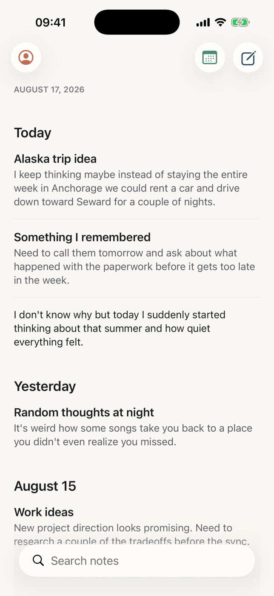
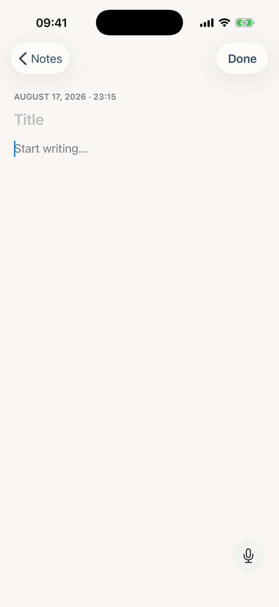
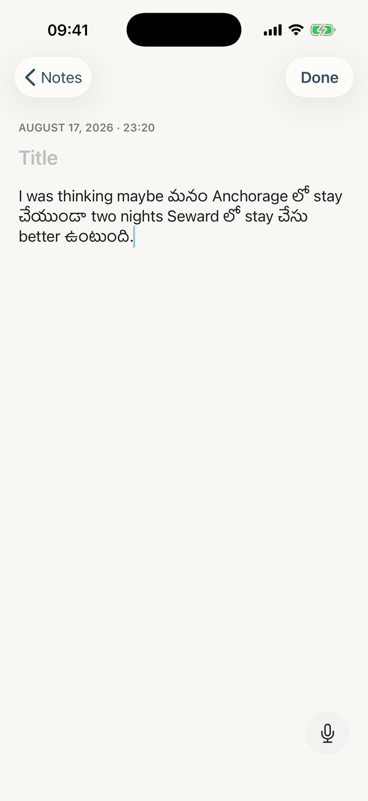
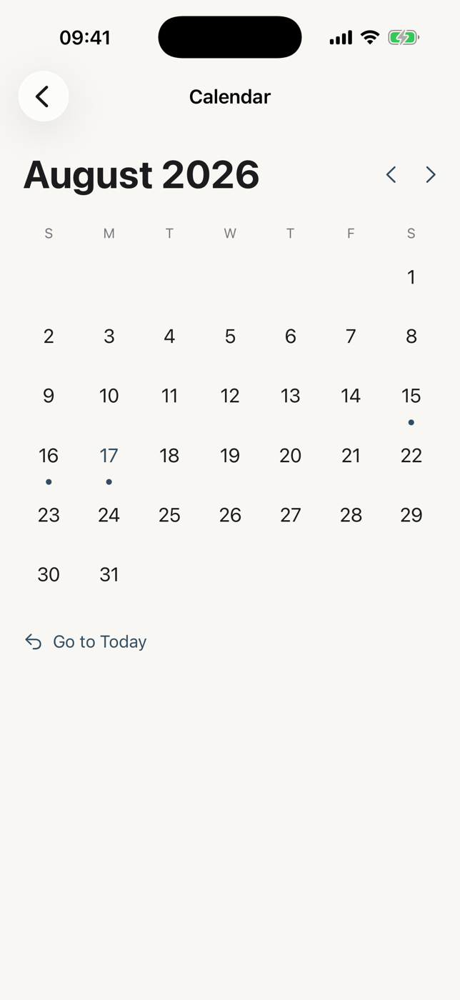
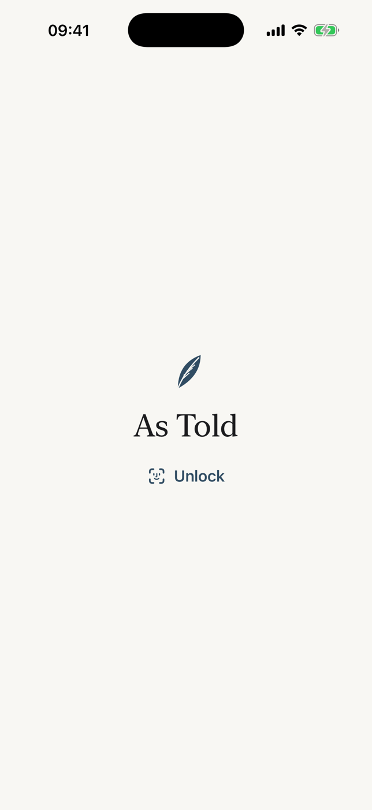
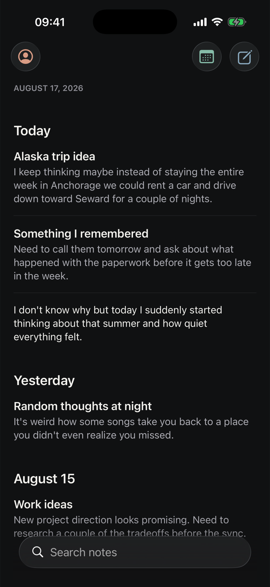

Anything you want to put into words.
Thoughts, notes, drafts, lists, plans, or whatever's on your mind. Write it or say it. As Told stays out of the way.

Some things are easier to type. Others are easier to say. As Told treats both the same.
Just start writing.
No folders to choose. No template to pick. No formatting toolbar competing for space. Open a note and write.
Your title is optional. Autosave is automatic. There is no Save button to reach for — the note is kept the moment it exists.

Or just say it.
Tap the microphone and speak naturally. When you're finished, your words appear directly in the note.
No separate voice-note library. No transcript screen. No extra workflow — the same note, now with what you said in it.

Keep it as you said it.
As Told isn't here to make your writing sound smarter, cleaner, or more professional. Voice capture is designed to preserve your words rather than turn them into something else.
Punctuation and capitalization are added so a spoken thought reads like written language. The words stay yours.
Speak the way you speak.
English. Telugu. Hindi. And the natural mix between them. Switching languages shouldn't mean switching how you think.
EnglishI keep coming back to the Alaska idea — maybe two nights in Seward instead of the whole week in Anchorage.
Telugu + Englishనాకు Alaska trip గురించి ఒక idea వచ్చింది. Maybe మనం Seward లో two nights stay చేస్తే better ఉంటుంది.
Hindi + Englishमुझे लगता है कि Anchorage में पूरा हफ़्ता रुकने के बजाय हम Seward में two nights रुकें — that would be better.
Nothing to organize.
Every note automatically finds its place in your timeline.
Scroll when you want to browse. Search when you remember the words. Use the calendar when you remember the day. That's the whole system.
Find it the way you remember it.
Remember what you wrote? Search the words. Remember when you wrote it? Jump to the day — notes are marked on the calendar.


Your writing isn't an account.
As Told doesn't require you to create an account just to write something down. What private means here →

No account required
Open the app and start writing. There's no sign-up, no email, no password.
Notes stay on your device
Your personal note library is stored locally on your iPhone — not in a cloud database of your notes.
Face ID protection
Add another layer of privacy when you want it. Your notes stay hidden in the app switcher until you unlock.
Audio used for transcription is sent securely for processing and isn't kept by As Told after the transcription completes. Your speech is transcribed in your own words — punctuation is added so it reads naturally, but nothing is translated, summarized, or rewritten. Read the full privacy commitment →
Yours, day or night.
Choose Light, Dark, or follow your iPhone automatically. Dark mode is designed on purpose — never just an inverted screen.

Less, deliberately.
- No account
- No folders
- No streaks
- No prompts
- No AI rewriting
- No productivity system
Just somewhere to put a thought.